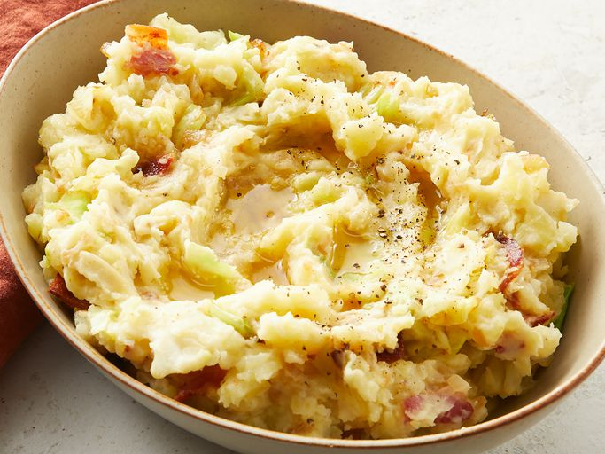

Diane's Colcannon

Colcannon is a traditional Irish dish consisting of buttery mashed potatoes with cabbage or kale.
Ingredients:
- Vegetables: cabbage, potatoes, onion.
- Bacon, Milk, Seasonings, Butter.
Steps:
- Boil and drain the potatoes.
- Cook the bacon and reserve drippings.
- Sauté cabbage and onion.
- Mash potatoes with milk and fold ingredients.
Other recipes: